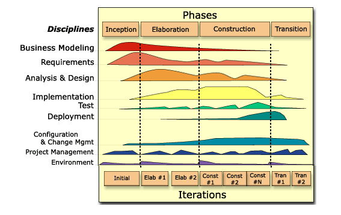

This Development Case documents a configuration of the Rational Unified Process suitable for use on medium size projects.

click on an element for more information
The iteration cycle graph above presents a visual overview of the process architecture adopted, and provides access to the individual discipline configurations described by the development case.
To learn more about the background, content, structure and applicability of this development case see the Development Case: Overview. To learn more about the process architecture see the Development Case: Life Cycle Model and Disciplines.